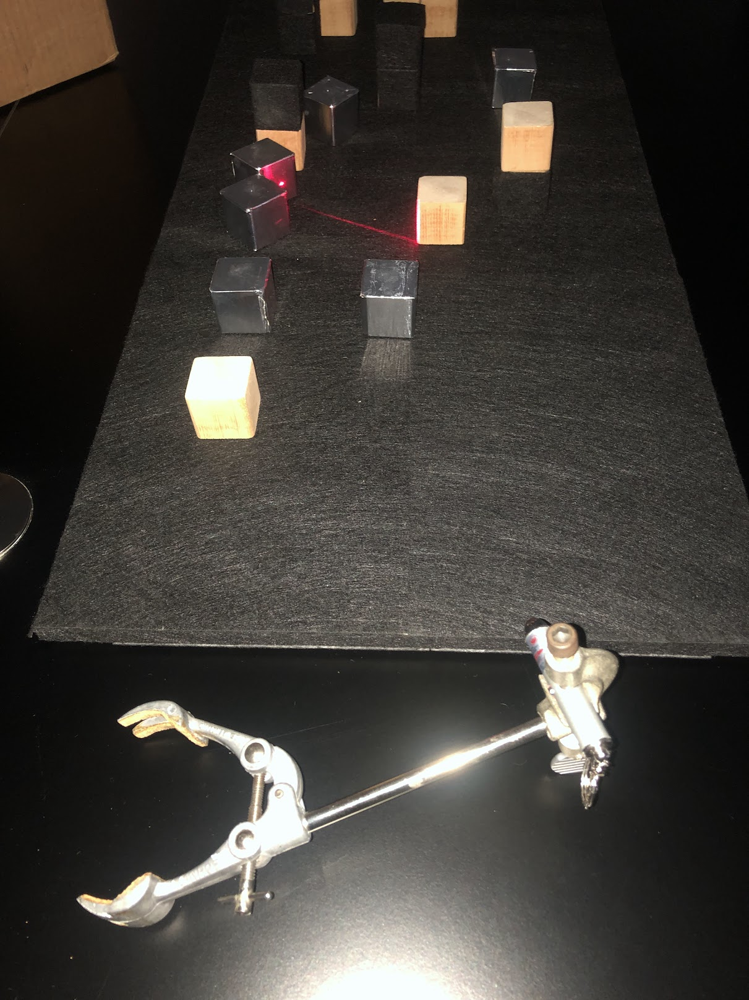

Design and Construction
Hands-On Demo
Let's go through how the hands-on demo, the one that was created using wood and felt, was created. We'll go over both the actual schematic and a generalized approach to creating a demo similar to this one.
The following materials were used in construction of the demo:
- Wooden blocks
- Wooden board (for the base)
- Black felt with adhesive backing
- Hot Glue
- Aluminum tape
- Nails, for connecting blocks to base
- Laser pointer
- Flashlight (phone flashlight will do)
- Small mirror
- Stand to hold laser + phone
All the wooden blocks were of the same length, width, and height. This makes it easier to add the blocks to the WebGL scene, as well as to the demo, as we only have one object type to work with. It also makes it such that the math for the reflection is all the same - given they're all cubes, which simplifies the math should details be added to the presentation.
The size of the wooden base is not important, as long as it is large enough to hold all the blocks. For the demo, the base was 39 by 77 cm, which is reflected in the WebGL code (see below). Each block was 3.6 cm by 3.6 cm by 3.6 cm. Again, the size of the blocks is not important. The only thing that matters in construction of the hands-on demonstration is that it matches what is in the WebGL scene (and cubes are the easiest to work with).
When deciding the layout of the scene, it's important to think of where the light source will be, and creating something that will look visually appealing from that. Even if the light source changes position, if the scene is set up in an interesting way, it will still look good. If enough blocks are used, re-creating landscapes, buildings, or other objects is possible and is an excellent extension to the demo.
The black felt was used to cover the wooden base before adding the wooden blocks. This felt was intended to reduce light reflections off of the base to emphasize the blocks themselves. Some felt was placed on the wooden blocks as well, to reduce light reflections off of some blocks to add more contrast to the scene. Other blocks were covered in aluminum tape to create a mirror-like surface (although without it being a perfect mirror, it had much more of a matte finish). The rest of the blocks were left as-is. This was done to create a variety of surfaces for the light to reflect off of.
The blocks were then nailed to the base in a precise fashion - aligned with the grid and the same as is set up in the WebGL scene. The grid was drawn on the other side of the base, so that the blocks could be aligned with it. A nail was placed and hit in the center of where each block would be, which was lined up with the center of the block itself. Just using a ruler and then hot glue is an alternative method to this, but it is not as precise.
Below is an image of what the general setup looks like:

The laser pointer was placed on a stand, which was then placed close to the base, so that the laser could be aimed at the blocks. Below is an image of the laser pointer on the stand, with the laser aimed at the blocks:

The same stand was used to hold the phone flashlight, which was aimed at the scene once the laser demonstration was done. Below are some videos of the laser and flashlight demonstrations:
From the phone's perspective (where the flashlight was moved during the demonstration):
And lastly a third perspective - the perspective of the presenter:
If you cannot view the videos, you can download them here, here, here, and here (corresponding to the order they are listed in).
WebGL Demos
Let's go through how the WebGL demos were created. Note that because the demos themselves are hosted on this website, screenshots of the virtual demos are not included - the demos themselves can be found here. We'll primarily outline the steps taken to create the WebGL demos, but if you want to see more of the actual code for the demos themselves, as well as corresponding comments and documentation, you can view the code on GitHub.
Setting up the Scene
First, we set up the html file that will contain the WebGL demo.
This file will contain the canvas element that will contain the WebGL demo, as well as the scripts that set up the canvas, WebGL language, various object loaders, and the demo itself.
The demo itself is contained in main.js for all of the demos.
Let's take a closer look at this javascript file.
Looking at this will allow us to see how the WebGL demo is set up, as well as how to modify the demo to add different objects and change their positions and other properties.
First, after calling setup(), we load the textures we're using for the demo using THREE.TextureLoader().load( 'texture.png' ), where texture.png is the name of the texture file.
For all the textures we've loaded, we want to be able to control how they interact with the light in the scene.
Each lighting model will need slightly different components for what they need to be able to interact with the light.
Let's look at Phong shading, considering that the geometry demo does not have any shading, and the ray traced scene was rendered in Blender.
We set the values using RGB values, where each value is between 0 and 1.
I've also defined constants for the cube size, as well as an offset so that the position for each cube can be set to be the exact center of the cube in a more readable way.
I then define materials for each of the objects in the scene, passing in the uniforms we've defined above.
Then, we make the skybox so that it's a black background - you can use whatever textures you want for the skybox if you want to try something different.
We then load the shader files that we need to define for all the different types of objects in the scene, and then assign the shaders to the materials we've defined using THREE.SourceLoader().
Next it's time to add the cubes to the scene. We have a lot of them, so I extracted this to its own method, addCubes().
The exact positions of these cubes are dependent on our in-person demo, so this is the part that you'll need to modify if you want to create a demo similar to ours .
For each cube, we create a mesh object, set the position, set the parent to the world frame1, and add it to the scene.
After that, it's more scene setup. We call the createScene() function to define the scene, camera, and world frame.
I define geometries for the sphere and the cubes, and then call the addCubes() function to add the cubes to the scene.
Then the terrain is created.
The next thing in the code is the function that checks keyboard input.
This provides the functionality of moving the light source around as you see in the demo.
Lastly, we define the update() function that will be called every frame, and then we start the animation loop by calling that function.
Creating the Shader Files
Now that we've seen how the WebGL demo is set up, let's take a look at how the shaders are set up.
The shaders are the files that define how the objects in the scene will interact with the light.
They are written in GLSL (OpenGL Shading Language), and then loaded into the WebGL demo using THREE.SourceLoader().
They are then assigned to the materials that we've defined in the main.js file.
The shaders are split into two files, vertex.glsl and fragment.glsl.
The vertex shader defines how the vertices of the object will be transformed, and the fragment shader defines how the fragments of the object will be colored.
Below, the code for the shaders is explained. This isn't needed for setting up the demo and everything explained above is sufficient.
Because we're not transforming vertices in our demo, the vertex shader is very simple - we're just computing and passing on values that are computed at each vertex of the object to the fragment shader. The important value that's calculated here is the normal vector, which is used to calculate the lighting in the fragment shader.
out vec2 texCoord; // texture coordinates for that vertex (grabbed from the geometry of the object)
uniform vec3 spherePosition; // position of the sphere
out vec3 viewPosition; // position of the camera
out vec3 worldPosition; // position of the vertex in world coordinates
out vec3 interpolatedNormal; // normal vector of the vertex
void main() {
texCoord = uv; // uv is a built-in variable that contains the texture coordinates for the vertex
// viewMatrix is a built-in variable that contains the view matrix
// we multiply the view matrix by a vector that contains the position of the camera in world coordinates
// the result is the position of the camera in view coordinates
viewPosition = vec3(inverse(viewMatrix) * vec4(0.0, 0.0, 0.0, 1.0));
// modelMatrix is a built-in variable that contains the model matrix
// the model matrix is the matrix that transforms the object from model coordinates to world coordinates
vec3 modelPosition = vec3(modelMatrix * vec4(position, 1.0));
// we multiply the model matrix by the position of the vertex in model coordinates
// the result is the position of the vertex in world coordinates
worldPosition = vec3(modelMatrix * vec4(position, 1.0));
// normal is a built-in variable that contains the normal vector for the vertex, so we just pass this along
interpolatedNormal = normal;
// projectionMatrix is a built-in variable that contains the projection matrix (the matrix that transforms from view coordinates to clip coordinates)
// clip coordinates are the coordinates that are used to determine which pixels are visible on the screen
// gl_position therefore contains the position of the vertex in clip coordinates
gl_Position = projectionMatrix * modelViewMatrix * vec4(position, 1.0);
}
In the fragment shader, what we do depends largely on the lighting model we're using. For the geometry demo, we're not using any lighting, so we just set the color of the fragment to be the color of the texture.
uniform sampler2D texture; // texture for the object
in vec2 texCoord; // texture coordinates for the fragment
void main() {
gl_FragColor = texture2D(texture, texCoord); // set the color of the fragment to be the color of the texture at the texture coordinates
}
For the Phong shading demo, we're using the Phong lighting model. This means that calculating the color of the fragment is a bit more complicated.
// Textures are passed in as uniforms
uniform vec3 ambientColor; // ambient color of the object
uniform float kAmbient; // ambient coefficient of the object
uniform vec3 diffuseColor; // diffuse color of the object
uniform float kDiffuse; // diffuse coefficient of the object
uniform vec3 specularColor; // specular color of the object
uniform float kSpecular; // specular coefficient of the object
uniform float shininess; // shininess of the object
uniform mat4 modelMatrix; // model matrix of the object
uniform vec3 spherePosition; // position of the sphere (the light source)
in vec3 interpolatedNormal; // normal vector of the fragment (computed in the vertex shader)
in vec3 viewPosition; // position of the camera (computed in the vertex shader)
in vec3 worldPosition; // position of the fragment in world coordinates (computed in the vertex shader)
in vec2 texCoord; // texture coordinates for the fragment
uniform sampler2D colorMap; // texture for the object
vec3 calculateAmbient(){
return ambientColor*kAmbient; // ambient color of the object * ambient coefficient of the object
}
vec3 calculateDiffuse(vec3 normal, vec3 lightDirection){
// to calculate the diffuse color, we need to calculate the dot product of the normal vector and the light direction
// sometimes the dot product is negative, so we need to clamp it to be at least 0
return diffuseColor*max(0.0, dot(normal, normalize(spherePosition - worldPosition)))*kDiffuse;
}
vec3 calculateSpecular(vec3 normal, vec3 lightDirection){
// to calculate the specular color, we need to calculate the dot product of the normal vector and the light direction
// we use Blinn-Phong approximation of Phong shading, so we need to calculate the halfway vector
// halfway vector is the vector that points halfway between the light direction and the view direction
vec3 viewDirection = normalize(viewPosition - worldPosition);
vec3 halfwayDirection = normalize(lightDirection + viewDirection);
// and then we calculate the dot product of the normal vector and the halfway vector
return specularColor*pow(max(0.0, dot(normal, halfwayDirection)), shininess)*kSpecular;
}
void main() {
// we calculate the normal vector by transforming the normal vector from model coordinates to world coordinates
vec3 normal = normalize(mat3(transpose(inverse(modelMatrix))) * interpolatedNormal);
vec3 lightDirection = normalize(spherePosition - worldPosition); // light direction is the vector from the fragment to the light source
vec3 out_Ambient = calculateAmbient();
vec3 out_Diffuse = calculateDiffuse(normal, lightDirection);
vec3 out_Specular = calculateSpecular(normal, lightDirection);
vec3 out_Color = out_Ambient + out_Specular + out_Diffuse; // the final color of the fragment is the sum of the ambient, diffuse, and specular colors
gl_FragColor = texture(colorMap, texCoord)*vec4(clamp(out_Color, 0.0, 1.0), 1.0); // calculate total color of the fragment
}
1 Setting the parent of an object defines the hierarchical relationship between objects in the scene. Setting the parent of the cube to the world frame means that the cube's position and orientation will be relative to the world frame, (as opposed to setting the parent as another object, which would mean that the cube's position and orientation would be relative to that object and so will move with that object).